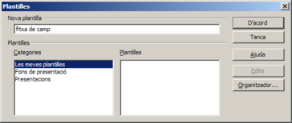
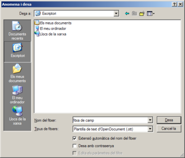

Les plantilles de documents
Una plantilla és un document que conté estils de format específics, imatges, taules, objectes i qualsevol altra informació. Una plantilla s'utilitza com a base per crear altres documents. Per exemple, es poden definir estils de caràcter i de paràgraf en un document, desar-lo com a plantilla i utilitzar-lo per crear un document nou amb els mateixos estils que els de la plantilla.
Si no s'especifica el contrari, tots els documents de textos nous del LibreOffice Writer es basen en la plantilla predeterminada. El LibreOffice Writer té un nombre de plantilles predefinides que es poden utilitzar per crear tipus diferents de documents de text com, per exemple, cartes comercials.
Crear una plantilla
La creació d'una plantilla és una tasca relativament senzilla. Ho haureu de fer com s'indica a continuació:
-
Primer caldrà crear un document que contingui els estils de format, personalitzats o modificats a partir dels predeterminats, les imatges, les taules i qualsevol informació que formarà part de la plantilla.
-
A continuació caldrà desar el document com a plantilla:
-
Demaneu Fitxer | Plantilles | Desa.
-
Escriviu el nom per a la plantilla.
-
Deixeu l'opció Les meves plantilles com a categoria on desar la plantilla.
-
Finalment, premeu el botó D'acord.
-
També, si es vol, es pot desar la plantilla en qualsevol altre indret de l'ordinador. En aquest cas caldrà que feu això:
-
Demaneu l'opció de menú Fitxer | Anomena i desa.
-
Escriviu el nom de la plantilla a Nom del fitxer.
-
Desplegueu Tipus de fitxers i, molt important, escolliu l'opció Plantilla de text d'OpenDocument (.ott).
-
Escolliu l'indret on desareu la plantilla amb Desa a.
-
Per últim, premeu el botó Desa.
Utilitzar una plantilla
Per crear un document nou a partir d'una plantilla, es pot procedir de maneres diferents segons si la plantilla és a la categoria Les meves plantilles, o si aquesta es troba en un altra lloc del nostre ordinador.
Si la plantilla pertany a la categoria Les meves plantilles:
-
Demaneu Fitxer | Nou | Plantilles i documents.
-
Feu doble clic sobre la carpeta Les meves plantilles.
-
Seleccione amb el ratolí la plantilla que voldreu fer servir.
-
Premeu el botó Obre.
Si la plantilla es troba en un lloc diferent de l'ordinador:
-
Demaneu Fitxer | Obre.
-
Localitzeu en el vostre disc dur el fitxer corresponent a la plantilla que voleu utilitzar.
-
Assenyaleu-la amb el ratolí i, finalment, premeu el botó Obre.
En qualsevol dels dos casos, s'haurà creat un document nou basat en la plantilla. Ara només caldrà completar el document amb els elements propis d'aquest. I desar-lo amb el nom "formulari.odt".

|
|

|
|